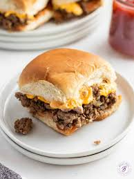

Chopped Cheese Sliders Recipe

These chopped cheese sliders are a slider version of the much-loved New York sandwich with ground beef, American cheese, shredded lettuce, and a special sauce on Hawaiian rolls.
Ingredients
- Mayonnaise
- Ketchup
- Yellow mustard
- Garlic powder
- Smoked paprika
- Ground pepper
- Lean ground beef
- Sliced cheese
- Hawaiian sweet rolls
- Lettuce
- Onions
Steps
- Stir mayonnaise, ketchup, mustard, garlic powder, and paprika together in a small bowl; season with salt and pepper. Set aside.
- Heat a large skillet over medium heat. Add ground beef, season with salt and pepper, and cook until browned, about 8 minutes. Drain excess fat, if desired.
- Lower heat to avoid overcooking beef, and lay cheese slices directly over beef. Allow to melt, about 3 minutes more, then chop beef and cheese together to create that signature chopped cheese texture.
- Slice Hawaiian rolls in half horizontally, keeping them attached. Spread chopped cheese sauce on both halves of rolls. Evenly distribute beef and cheese mixture over bottom half.
- Top with chopped lettuce, onion, and pickles. Place top buns back on and enjoy!
Home